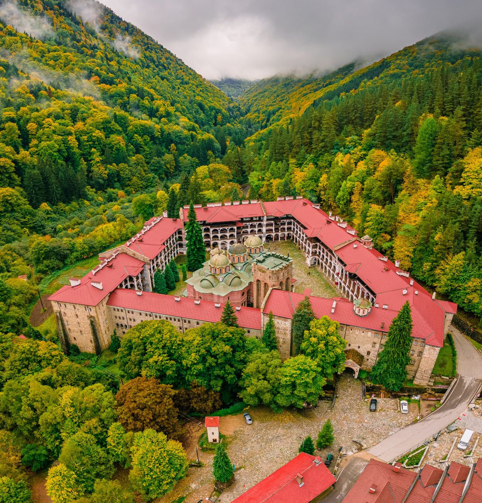
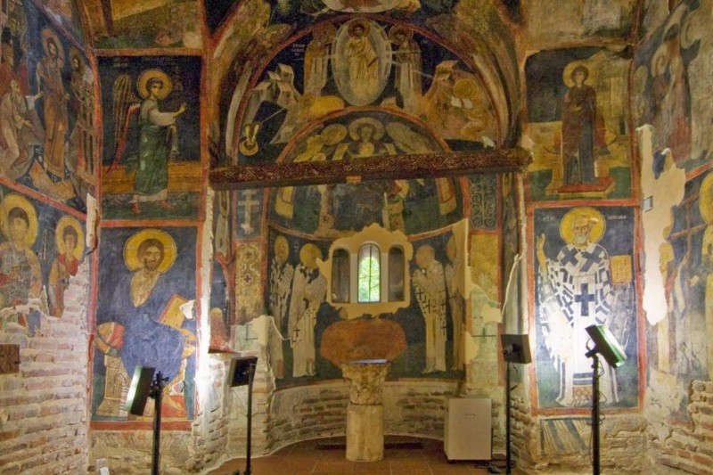
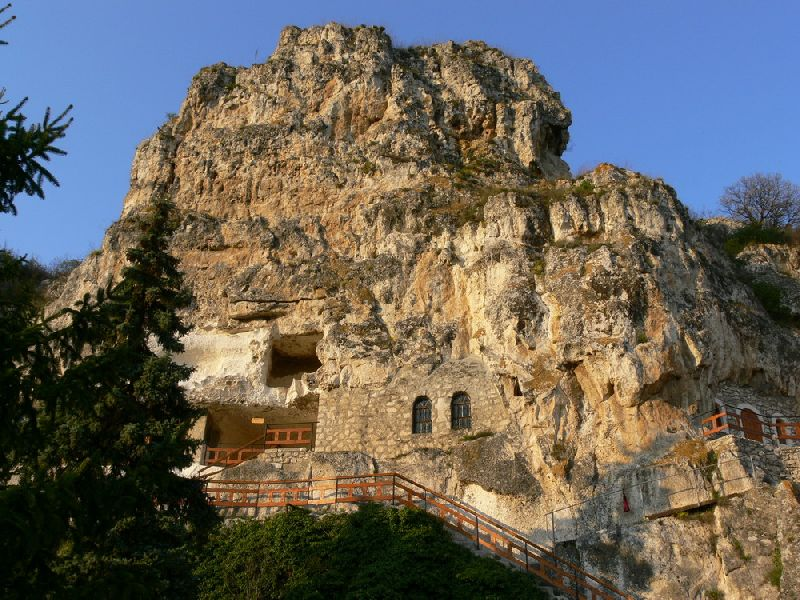

Рилски манастир

Рилски манастир – още един от символите на България. Разположен е на 1147 м. надморска височина сред вечнозелените иглолистни гори на Рила. Светата обител представлява съвкупност от култови, жилищни и стопански постройки с обща площ 8800 кв. м. Погледнат отвън, манастирът има вид на крепост с 24-метровите си каменни стени и форма на неправилен петоъгълник.
Рилски манастир се е радвал на голяма почит и уважение от страна на всички наши царе от Иван Асен II до падането на България по турско робство, и всички те са правели големи дарения на манастира.
Хрельовата кула е най-старата запазена сграда в манастирската обител. Издигната е като отбранителна кула от местния феодален владетел протосеваст Хрельо през 1335 г. На върха на кулата се намира малък параклис “Свето Преображение” с ценни фрески от XIV век.
Рилският манастир достига своя апогей в развитието си между XII-XIV век, като подемът е пречупен с идването на турците като следва разрушаване на манастира в средата на XV век. Оттогава с помощта на руската православна църква започва неговото съживяване. И така до ден днешен. Рилският манастир е един от най-обичаните и посещавани обекти в България, включен в списъка за световното наследство на ЮНЕСКО през 1989 г.
Боянска църква

Боянската църква е една от най-забележителните църкви не само на територията на София, ами и в цяла България. Средновековната българска църква “Св. Св. Никола и Панталеймон” се намира в квартал Бояна, в полите на Витоша.
Храмът е двуетажен и спада към типа двуетажни църкви – гробници, при които първият етаж е плануван за крипта, а вторият за семеен параклис. Най-ранната църква се отнася към X-XI век и е малка кръстокуполна сграда, с вградени подпори, формиращи вписан кръст. Църквата е разширена през XIII век, когато е пристроена основната част от севастократор Калоян, което я определя като храм от типа църкви-гробници. Тя е двуетажна като първият етаж-крипта е покрит със полуцилиндричен свод, а горният етаж-повтаря архитектурния тип на ранната църква.
Възрожденската трета част – пристройка, явяваща се като предверие към същинската църква е построена в средата на XIX век. По-късно княз Фердинанд устройва красивия двор около самата църква и до днес там могат да бъдат видяни засадените от него северно-американски секвои. Един от символите на България, филиал на Националния исторически музей от 2003 година, а в голямото семейство на културно-историески забележителности на ЮНЕСКО е от 1979 година.
Скални църкви край Иваново

Село Иваново се намира на около 20 км южно от град Русе. Именно там се намират и известните Ивановски скални църкви. Забележителни са с това, че за разлика от останалите запазени скални манастирски комплекси в България, Ивановските скални църкви са с много добре запазени стенописи, различни стопански помещения, свързани помежду си посредством разклонена мрежа от църкви, параклиси, килии. Всяка от тях е издълбана в скалите на различна височина и се свързват с тесни пътеки и скални стъпала. Скалните църкви при село Иваново са неразделна част от стотиците средновековни скални църкви, манастири, скитове и отделни отшелнически килии, които в периода на зрялото Средновековие се превръщат в прочуто духовно средище на българите.
Най – запазената църква от целия комплекс е „Света Богородица“. Тя е добила световна известност със забележителните си стенописи. Църквата е изсечена на височина около 40 метра, има няколко помещения , както и малка тераса с изглед към живописната долина на Русенски Лом. Цялата е изписана с библейски сцени, а също и жития на светци.Обектът е включен в Списъка на ЮНЕСКО през 1979 година.